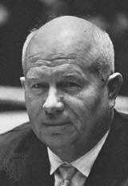

|
|
没有一个宗教像基督教这样一直唱一直唱，唱不完。也没有一种人像基督徒一直唱，一直唱，唱不完。你还没有生出来你妈妈就就唱了，等到你死了别人再替你唱，唱到坟墓还在唱。到底基督教的诗歌有多少？没有人知道。《金氏世界记录》(Guiness World Record) 他说基督徒的诗歌至少有五十万首。我想一定超过的，因为许多我所做的还没有放进去。
|
所以基督教的诗歌大概多得不得了。几百万首。但是在古代一个叫大贵勾利
(Gregorius Magnus,
590-604) 的时代，他因为许多许多的诗歌的内容不符合圣经，所以他就下一个命令，把所有的诗歌堆积起来好好挑选，从头做一个过滤，给教会们有一个正统的诗歌的概念。
那就产生了 Gregorian Chants。现在我想教会应当注意这个问题，因为有许多许多的诗歌对词句的内容还有教义的严谨性还没有做一个正式的过滤。所以许多许多人唱的时候就没有发现到里面到底有多大的差错，或者偏失的地方。
好了，我们的电影不久就要出现了。我们这几天讲的是关于普遍启示以及特殊启示，那刚才李牧师说「有的人提醒能不能请你讲慢一点。 」这是我一生最大的毛病！
我是 long play speaker， 又是 fast speed speaker. 所以我需要你们一面为我祷告，一面听。
因为有时候我心里很急，所以很难控制自己的速度。你们对我有要求，我也对你们有要求。你们盼望我讲慢一点，我盼望你们听快一点。这个叫做 「公义」，对不对呢？如果只有听众对讲员有所要求，讲员对于听众没有要求那是不公平的。
我们低头祷告：
「主啊，求你赐福我们以下的时间，使每一句话，每一段都成为我们 属灵的知识和信仰的基础。你听我们的祷告，奉耶稣基督名求的。阿们。」

有谁带圣经来的？请你把圣经拿起来（借来的不算了）。把自己的圣经带来。我们现在看一些圣经，我们看使徒行传，大家一同打开使徒行传，我们看第十四章到十五节到十七节。使徒行传第十四章十五节
到十七节。翻到了一同来读：
「诸君！为什么作这事呢？我们也是人，性情和你们一样；我们传福音给你们，是叫你们离弃这些虚妄，归向那创造天、地、海，和其中万物的永生上帝。他在从前的世代，任凭万国各行其道；然而为自己未尝不显出证据来，就如常施恩惠，从天降雨，赏赐丰年，叫你们饮食饱足满心喜乐。二人说了这些话，仅仅的栏住众人不献祭与他们。
」第十七节：「然而为自己未尝不显出证据来，就如常施恩惠，从天降雨，赏赐丰年，叫你们饮食饱足满心喜乐。」
我们再看第十七章，使徒行传第十七章，第二十五到二十八节：
|
「上帝不用人手服事，好象缺少什么，自己倒将生命、气息、万物，赐给万人。�k从一本造出万族的人，住在全地上，并且预先定准他们的年限，和所住的疆界；要叫他们寻求上帝，或者可以揣摩而得，其实他离我们各人不远；我们生活，动作，存留，都在乎他；就如你们作诗的，有人说："我们也是他所生的。"」
|
|
第三十到三十一节大家一同来读：「世人蒙昧无知的时候，上帝并不监察，如今却吩咐各处的人都要悔改。因为他已经定了日子，要借着他所设立的人，按公义审判天下；并且叫他从死里复活，给万人作可信的凭据。」
我们再读昨天所念的，罗马书第一章，我们大家再来读，第十八节到二十：「原来上帝的忿怒，从天上显明在一切不虔不义的人身上，就是那些行不义阻挡真理的人。上帝的事情，人所能知道的，原显明在人心里；因为上帝已经给他们显明。自从造天地以来，上帝的永能和神性是明明可知的，虽是眼不能见，但借着所造之物，就可以晓得，
叫人无可推诿。」
我们昨天读到这一段圣经的时候，我们提到上帝的普遍启示的最后一个目的就是成为审判人的凭据。所以人已经领受了上帝的启示，也就是有了某一部份真理的认识。因为神的真理，神的启示是知识的基础
。如果神不愿意把真理启示给人，如果神又不愿意造一个能够有可能明白真理的人，那就没有任何的一个位格能够有任何的真理的任何知识。我们做一个很简单的想象，如果上帝创造万物创造到第五天就结束了，没有创造第六天里面的亚当、夏娃。这样，万物都被造了以后
，人没有出现，那么这些万物都是不能知真理的，这些万物都有它的存在，但是有一些甚至有对自己存在的觉悟的存在。这个在德文，在德国的哲学里面把「存在」和「存在物」是分开来的。「存在」不是单单一种客观的物质在那里占有空间和时间而已，因为存在的本身有对存在的自我意识的存在，所以存在的「意识」是比「存在」更高一
层的觉悟。譬如说，这里这个小小的讲台是存在的，这个麦克风是存在的，而这个讲台的存在有它存在的功用。这个麦克风的存在有它存在的功用。那我也在这里存在，我的存在有我存在的功用。但是这个
「物质」的存在和「被造之物」的存在以及「造万物的神」的存在的存在是不一样的。连被造之人的存在与被造之物的存在也是不同层次的存在。
这个桌子存在是「不知道它自己存在」的存在。我的存在是「知道我存在，也知道我与其它存在之间的关系的存在」的存在。不但是我知道我存在，不但是我知道我存在之外其它事物的存在，我也知道我的存在与其它事物存在之间那个关系的存在。所以事物的存在，是最被动性的存在，而有对存在有意识的存在，是比较深入的一个存在。而对存在与存在之间的关系的意识的存在，乃是一种「关系的存在」而不是一种个别的客观的物质的存在。这个我们一直讲下去会很头昏的
！
更简单的归纳起来，「桌子存在不存在？」这个桌子存在，但是桌子知道不知道它存在？知道吗？这个桌子不知道它存在。我存在吗？我存在。我知道我存在吗？我知道我存在，所以「对存在的意识」是使我们超过了客观物质存在的一个存在。所以「存在意识」是有生命有知性的一个更高的存在。而上帝创造人的时候，人不但在万物的存在中间是一个与万物共同存在的一个存在。神造人的时候把那个唯一对存在有「自我存在意识」的存在放在里面。所以人不但存在，人有「
自我存在的意识」的存在。这个「自我存在意识」的存在是使我们超过其它存在的一个意识。所以这个意识的存在也使我们对存在的意义产生了无穷无止息的一个追求。
昨天我讲了，「神的启示是一切认知识的基础。」有许多人可能了解这一句话语，我提到二加二等于四也是神的启示。那二加二等于四是个真理， 但这是个「数学性」的真理，
而不是有位格性的真理， Mathematic truth is a part of the truth. 但是这个真理是没有任何的活物了解只有人了解。没有任何的知识和任何的真理是在神以外的。所以「所有的真理都是神的真理」，而神是真理的源头。所以
当神把真理向人显明的时候，�k就借着被造界彰显了�k的创造性的工作和能力。所以在被造界里面我们看见了神是创造者的真理。所以神是创造万有的源头，�k把一切被造的真理隐藏在被造界里面。所以借着被造界彰显神荣耀的时候，也就是上帝在普遍的范围中间把�k的一些被造的真理向人显明的时候。所以在受造界中间我们所寻找到的任何的知识是神的普遍启示。
在普遍的系统神学的书里面你几乎没有看到这样的解释，而在一些比较广泛的讨论 general revelation
的书里面可能你会看到一些这样的事情。这关于 common grace 的，荷兰的该柏尔 (Abraham Kuyper 1837-1920) 写了三大册的书。
关于启示是知识的源头，范泰尔 (Cornelius Van Til, 1895-1987) 写了一些的书。 我想我们东方有许多甚至受西方的教育的人结果对头脑的组织和真理架构的建立没有
太大的注意，而西方的许多许多现代的神学家他们对整个形上的知识架构也没有很严谨的分析，所以我可以说我们许多的信仰交待到最深一层的时候都交待得不够清楚。（现在什么都有了，就是笔没有，这个没有笔怎么写啊？这个叫做有生命，没有内容，或者有聚会没有信仰一样的。黑版没有粉笔，就像有生命没有信仰一样的。这个可以擦掉了，那很好，我不必用那个纸了。）好，我们现在要看一些很重要的事情。
知识的源头就是从神而来的，因为神就是真理。那么神使我们可以有所知识，因为知识就是对真理的觉悟和对真理的了解。那么神创造了万物，神又创造了人，所以万物是为人而造的，人却是为神而造的。现在我们看见很重要的循环线，神造万物，万物是为人，神造人，人是为神。这样神就比人更高，人又比物更高。你把这个循环线搞清楚了以后，你这一生做人就比较不会胡涂了。
我再讲清楚，神造万物是在造人以前，这表示人的价值是超过万有的，因为神造万物是为了人而造的，而神造人是为了神自己而造。这样，造的本体是上帝，造的位格是借着基督的道，造的能力就是第三位格的圣灵。所以万有因为上帝的灵而被造，万有是借着道而被造的。这样，道成为万有被造的动因。这三位一体的上帝是创造主，上帝创造万物是为了人，上帝创造人是为了神，所以神就高过人，人就高过物，圣经这个层次的安排是非常非常严谨而清楚的。那么当人知道物
的时候，乃是因为神把�k的荣耀彰显在物的里面，这个物在人的下面 ，这是从 ontological position 来看的。从本体论
(ontology) 的编排的次序来看，物在人的面，但是从物质的方位来看，有一些物是在人的上面，无论它在我们的上面在我们的下面，在本体的方位当中都在人的下面。
|
|
所以当我们看天上的星的时候，你看见许多的星是大得不得了的，比太阳还要大五千倍的星叫做 Vega （织女星），比 Vega 更大几万倍的星也存在着，而太阳比地球大一百三十万倍。这伟大的宇宙，虽然多么大，都是比人更低的，不是从物质的方位来来看，乃是从 ontological position 来看。
|
在神的本体里面，从整个 创造的范围里面，人是高过万物，所以万物为人造，人就比万物更高 ；人为神而造，所以神就比人更高。这样，我们在自己找到了神与万有中间的位分以后，我们才懂得怎样做人。那么孔子在这方面就提出四个字来了，这四个字是整个人类方向里面最基础的四个字。什么字呢？就是「格物致知」，这是很大的一件事情。当你对物质有所规格
有所研究的时候，你就有所知识了。所以对自然界的了解、分析就产生了自然知识，对自然的学习就产生了自然科学，而这个格物致知就是科学的范围。
格物致知、修身养性、齐家、治国、平天下。这样，整个人性的活动和目标最基本的层次就是对物质的了解 ---- 「格物致知」。这样的一个范围也就是一个科学的范围。
所谓「科学」是什么呢？就是对各种自然学问的了解。这个在拉丁文里面叫做 scio，这个 scio 的意思就是 I
Know，你知道什么？你研究天文就知道天文学。你研究地质，你就明白地质学。你研究物理你就知道物理学。你研究化学元素和关系、变化，你就明白化学。所以「我知」这个是科学的范围。那么连科学也是神启示的，为什么呢？因为神创造万有，又创造了有理性的人，叫人用神所造的理性去格物致知这样人就明白了自然界的知识。所以很严谨的基督教的哲学告诉
我们， 连科学的知识也是神的启示 (The strict Christian philiosophy of epistemology teaches
us even the sicentific knowledge is base on the revelation of God.) 因为「诸天述说上帝的荣耀」，也就是上帝在大自然启示了自己，你才能有知识。上帝把�k整个宇宙的被造之物当做�k显示自己创造功能的场所。所以在上帝所创造的大世界中间我们看见了上帝要我们认识�k的某一部份本性。你看见基督教多大了吗？今天我们的基督教就是跑到礼拜堂来逃避社会的困难，然后唱唱诗安慰自己的那种基督教。
有一次我在 Iwoa Universtiy 讲道。我那一天的题目是 How big is the
Christianity? 你的基督教到底有多大？ 这个 depend on how big is your
Chirst? How big do
you know about your Christ? 基督是充满了万有者，基督是神借着�k创造万物的那个道。所以在万有中间有神的道的凭据。刚才我们看到的圣经告诉我们，「�k未尝不
显出证据来。就如降下雨，给我们空气、生命、气息、丰收、使我们丰衣足食，使我们满心喜乐。」这就是大自然所显现的上帝的恩典。这个恩典不因为你信了耶稣才给你的，这个甚至连反对上帝的人也在享受上帝给他的恩典，
那这种恩典叫做 common grace， common grace is very differnt form the saving grace. 普遍恩惠和救赎的恩典是不同的；救赎的恩典只有在启示的特殊范围里面才看到，但
是 common grace 乃是在普遍启示里面看到的。所以无论在我之下的方位的物，或者在我之上的大的体积的在我之上的方位的物都本体界里面是在我之下。神创造人，使人高过万物，在万物中间只有人有知性的可能，所以人是有价值的。
好，现在我们要思想有关于「知」的问题了。神是「知识」的源头， 因为神就是真理。那么神的知识应当分成两个范围：第一个范围是神的自知。第二是神对人类以及受造物的知。用中国古代的军事策略名词叫做「知己知彼」。
你知道你自己， 叫做 ortho knowledge，和 hetero knowledge 你知道你自己，你知道别人，
只有神的「自知」 与神的「他知」绝对的绝对。我再讲一次，只有神的「自知」与神的 「他知」是绝对的绝对。我们的自知是不绝对的，你听道听到一半忽然间生了什么病，哪一种细菌在你里面在几个月里面会杀害你你都不
知道。
有一次我找眼镜找得半死，结果发现已经在我脸上了。为什么呢？因为我的自知不是绝对的，但是神的自知是绝对的。那么我们现在的知识到底是不是绝对的呢？我们现在对神的知识是不是绝对呢？你们听
一些圣诗的时候听过这样的话，「当我们到主那里去的时候，我就完全知清了。」听过那句话吗？唱过那句话吗？真的吗？以后我们到天堂去的时候我们的知识是不是绝对的？是不是？你们都不会回答了。
以后我们到天堂去，我们的知识是不是绝对的？连到我们到天堂去， 对神的知识还不是绝对完全的。为什么呢？只有神对神自己的自知是绝绝对对、完完全全的。我们还没有办法突破，或者进入神是那创造者的范围。我们是受造之物，我们的知识在受救赎的范围里面可以进到更加完全的步，但是这个乃是比现在在受造界的揣摩更完全的相较的比较之下讲的。但是这个所谓的「比较完全」，没有办法与上帝的完全来相比，因为只有上帝的完全是全的全，绝对的绝对。
我相信德国的哲学家费特 (Johann Gttlieb
Fichte, 1762-1814) 和霞林 (Schelling, 1775-1854) 这两个人曾经用过这两个双重的名词 ---- 「绝对的绝对」。 但是他讲的和我讲的是不一样的，我们讲的是神的本性来看，他所讲的是从他的思想像来讲。
好，神的「自知」，神的「他知」，是绝对绝对完完全全的自知与他知。神所造的万物中间没有自知的可能，也没有他知的可能。在被造之物的生物界里面，有一些很本能性的，很基本的那个存在的知识。
|
但是这些动物的「知」和我们人类理性的「知」是完全不同层次本质差异的「知」。动物的「知」不过是与本能有关生命的存在延续下去所需要的一些很基本的知识。但是人的「知」可以研究真理的那个知。所以我可以说动物的「知」是不过是在「感性」的知识范围里。但人的「知」是借着「理性」要回到真理理性的「知」的范围里。
|
|
所以 我们有理性的知识，动物只有感性的知识，而感性的知识和统一性的真理是没有关系的，理性的知识和统一性的真理是有关系。所以圣经告诉我们， 人是为神而造的，
所以 Man are created in order to think after God's thinking 人被造是为了思想神的思想，
人要照着神的思想去想。这样，人与神的真理就发生了不可否认的关系。那么「神的启示」和「人的理性」之间的关系是什么呢？请你注意听下面这两句话，「神创造了理性，神又启示了真理」，我再讲一次，「
神创造了理性，神又启示了真理」，乃是要叫�k所启示的真理来引导�k所创造的理性。被造的理性如果不在神所启示的真理之下被引导的话，我们就像许多的哲学家变成「理性的浪子」，就像马丁路德所讲的变成「理性的妓娼」。所以当一个理性被圣灵所启示的真理所引导的时候，这个理性是回向真理的一个理性；对真理的归回就变成就纯正的信仰方向。所以这理性归向真理」是神启示真理就有理性的人的
一个目的。你把这些重要的原则抓住了，那你一生就在正确的方向上行走。我再讲这个关系。神创造了理性，神又启示了真理，这两件之间的关系是什么呢？乃是要照神所启示的真理来引导神所创造的理性。
好，我们继续讲下去。这样，在神自知的绝对性，和物的不知的相对界里面，人是唯一在相对界里面有「绝对」这个观念的活物。人在相对界的物质世界里面有神的形像，所以人能思想真理的问题，人能明白真理，这个「明白」是透过神的启示而明白的。那么这样，在被造界之中，只有人能明白真理。因为只有人能明白真理，所以人是比万物更高的。
现在我要请大家注意在斯多亚派 (Stoicism) 的思想里面，斯多亚的哲学是从一个人开始的，叫做杰诺
(Zeno of Elea, 426-491)，他开始了以后，后来影响很大，前后有差不多八百年的历史，主前四百年一直到主后四百年，统治了西方最高的理性头脑的文化就是斯多亚派哲学
(Stoicism)。 当耶稣基督在世界上的时候，基督赐下了一些超过任何哲学体系更高深的言论，许多人却没有注意到，在基督降生的四百年里面，传福音的工作最难克服的一群人就是受过斯多亚哲学熏陶过的人。所以斯多亚派的哲学以为自己是最高的知识分子，他们有的对基督教的思想认为是轻视或者认为是不够份量。但是伟大的思想需要经过一段很长的历史才会被众人所认同。所以到了主后第四世纪以后我们看见伟大的神学家奥古斯丁
(St. Augustine, 354-430) 就胜过了斯多亚派的哲学。那么斯多亚派的哲学无形之中揣摩到了一些重要的原则，这个原则是什么呢？就是他们把整个存在界分成三个范
围。第一个范围就是完全无感性、完全无理性的物质界，这是最低最低的一个范围。第二、他把那个有生命，有感性的放在第二范围，就是中层的一个存在界，所以动物们有存在又有存在所需要的感性功能。第三、最高的存在界是人，这句话怎么讲呢？（我现在把这个擦掉了，盼望你头脑中间不要擦掉）在这个人比感性世界和无感性的物界更高的范围里面，只有一个原因，因为人有理性的功能。把人与万物分开，
为了有理性做分界线， 这个是从亚里斯多德 (Aristotle, 384-322 B.C.) 的思想开始的。这个把人与万物分开来的分界就是「理性」。
在斯多亚派的哲学和以彼古罗派的宇宙观是不一样的。斯多亚派不是唯物论的，斯多亚派相信有共同的宇宙理性。这个是比苏格拉底、柏拉图、亚里斯多德更深一层的体认。苏格拉底、柏拉图、亚里斯多德
有一个共同的思想， 就是他们相信有普世共同观念 (universal Idea)。这个柏拉图用的字叫做「 Iedo?
」这个字，就是有宇宙性的观念。但是到了斯多亚派的思想里面，他不是单单提到普世的观念， 他就提到一个很重要的字，后来在约翰福音出现的这个字叫做
logos 。所以在斯多亚派的思想相信，有一个运行万有中间的「宇宙理性」。 所以从斯多亚派的思想来看， logos 是什么呢？就是 cosmic
reason，就是「宇宙性的理性」。那么人呢？人是宇宙中间唯一能够体会宇宙理性的「小理性」。 所以斯多亚派把人当做 logikos。 logikos 是什么呢？就是「小理性」；有小理性的是人，而宇宙的大
理性叫做 logos。 所以 the purpose of lokigos is to understand, to united himself
to the logos. 所以人的小理性要和宇宙的大理性结连在一起。那怎么可能呢？所以就要思想真理，要了解真理。到死的时候，有理性的人就归到那个宇宙理性的源头那里去。
今天有很多新派的神学家，他们认为《约翰福音》是借用了，或者《 约翰福音》是受了斯多亚派的影响来把 logos 记下来，
连田立克 (Paul Tillich, 1886-1965) 的思想都是这一方面的思想。但是我的神学思想不接受这个观念，我认为当上帝启示约翰的时候，就把真正的
logos 的真正含意赐下来了。 换句话说，虽然在普遍启示中间， 有过模糊的 logos 的观念， 但是没有一个人真正正确的了解那个 Logos 是什么，只有当特殊启示借着圣经的默示赐下来的时候，使徒约翰才把真正的
Logos 的意义把它表达出来。 所以在斯多亚派的观念里面，这个 Logos 是没有位格的。 但是在约翰福音第一章第十四节告诉我们，这 Logos 道成肉身，是有位格的。
这个是基督教思想超越所有哲学的一个很清楚的一个例子。我今天本来不想讲这么深， 讲这么多。因为你听这些以前，你需要有一些哲学的训练，否则你会很麻烦的。但是谁知道在我们中间有一些哲学天才还没有被发现出来呢？
我十七年前第一次到马来西亚来讲道，我从来没有给你们讲这么深的东西，因为我知道我的时候还没有到，你们的时候也还没有到。在美国有时候我讲这些了，在大学里讲这些了，现在我开始在东南亚讲这些了。我相信神要预备我们的头脑做一些更深的研究，求主帮助我们
。今天甚至许多西方的所谓大教会所认识的东西太肤浅了，你不要跟西方跑。他们真的太肤浅了！基督教的真理和对超越所有哲学的深度是高得不得了。我们要怎么样正确了解，要把一些很重要的原则和钥匙抓住了。所以这几年我盼望把这些重要的原则向你们交待清楚。
|
|
好，人是 logikos，人会了解 logos。但是斯多亚派就没有办法告诉我们，logikos 怎么样 united to logos，他们冥冥之中知道宇宙的理性，人的生存的目的就是要与这个理性结合。那么圣经给我们更清楚更清楚的启示；圣经告诉我们，神（我现在把神放在最高的地方）�k是真理的源头，�k是知识的对象，就是人的知识的本体对对象的上帝。而把真理的知识使人明白的时候，�k做了一个启示的工作，�k又把能领受启示的可能放在人的里面。所以神是「启示者」，人是「受启者」。而神的启示在什么地方呢？神的启示在自然界，所以人可以格物致知。
|
这样，人就变成了有「自知」和「他知」的受造物， the only being with the possibility
of ortho knowledge and hetero knowdledge that is man. 人是照着上帝的形象样式造的。 那么在知性这方面来说，我们从什么地方看见这是照着上帝的形像造的呢？圣经只有一节的圣经提到神形像的三方面的解释，那就是以弗所书第四章第二十四节，在这里提到三个重要的重点。第一、真理。
第二、公义。和第三、圣洁。照着真理的公义（仁义）和圣洁。
「真理」的意思就是人有理性。「公义」的意思，就是人有法性。「 圣洁」的意思就是人有德性。这是受造之物，人是唯一有理性、有法性、有德性的受造物。这样，人之所以为人有这三大范围：第一、理性功能。第二、法性功能。第三、德性功能。而这三方面是神形像的三个层次。
我们现在单单从第一个层次来思想，人是唯一能知者，所以人是受启者，而神是启示者。神的启示是根据神本身是真理的源头、是知识的本体。那神启示人的时候，就要经过两个很重要的条件了。第一是什么呢？就是他是乐意启示的。第二、�k是诚实启示的。
如果神不乐意启示，我们没有办法认识真理。第二、如果神不是诚实启示，我们也没有办法认识真理。所以这两个条件是非常重要的，in willingness and honesty of God's revelaiton. God to be
initativity to revel Himself, in willingness and in honesty. These are both
conditions. 上帝乐意启示，上帝诚实的启示。 所以在「韦斯敏斯德信仰告白」 (Westminister Confession) 里面给我们看见启示者与我们领受的启示是一致的。什么意思呢？换句话说
，�k在启示的中间告诉我们的上帝，就是在本体界真真实实的那一位 上帝。我们听见许多人讲一句话，「这女子怎么年年十八岁呢？」她二十五岁的时候她告诉我，「我十八岁。」到二十八岁她说「还是十八岁」。所以你就心里奇怪，除了上帝永远不变，还有这个人永远不变的。换句话说，她介绍自己的时候，她是不诚实的，你明白我的意思？但是当上帝启示真理的时候，�k是诚实的。所以如果神不诚实，�k就不是神了；如果神不诚实，我们也就没有办法认识�k是怎样的了。所以神如果不乐意，我们没有办法认识，如果神不诚实我们也没办法认识。所以神的甘心乐意和神的诚实成为�k启示的条件。
好，我们现在思想下去。我们对物质的「知」，这是神在自然界启示自己。所以自然的启示也叫做普遍启示，而普遍的启示是怎么样的呢 ？ 第一、 是在受造的时间长久性里面是永远不变的。
这个就是 consistencey in the realm in the limit of time. （时间限制里面的一致性。）神造了时间、空间以后，神的启示没有停止，一直存
在。
第二样、这个启示是普遍的，给每一个人的，与救赎性的信仰没有关系。所以如果你没有救赎的恩典，你没有相信耶稣基督，你还是照样可以看见神的启示。换句话说，人人都可以看见这个启示。
第三样、神的这个启示就成为自然界知识的基础。
这样，普遍启示成为科学的唯一可能。我再讲一次。普遍启示成为科学的唯一可能。这是普遍启示的性质。那么，请问，普遍启示够不够呢？普遍启示是不足够的。为什么说普遍启示是不足够的？因为普遍启示只有使人了解受造界的真理，到最高的层次里面只有使人了解创造万物者的上帝自己存在的真理。这样，罗马书第一章第十九、第二十节告诉我们，「借着被造之物，我们看见上帝的永能和神性。」神的神性，神的永能给我们看见了，那么这是一部份的真理。因为这是
一部份的真理，所以这一部份的真理是在普遍启示里面所给我们的一 个「种子」。现在我把这个字提出来了，一个「真理的种子」就是从普遍启示而来的。而普遍启示所我们所的真理的种子成为一种「自然
的信心」，而这个真理的种子给我们看见的是什么呢？就是「神的存在」。在神的存在里面，受造之物看见几件事情：第一样、神的荣耀 。第二样、神的能力。第三样神的智能。第四样、神永恒的本性。在这个永恒性里面，你看见�k托住万有。在智能里面，你看见了那奇妙的设计。在能力里面，你看见无穷的能都隐藏在大自然里面。而从整合性的来看，大自然彰显了上帝的荣耀。所以普遍启示的目的乃是「
彰显神的荣耀，神的能力，神的智能，神的恒性。」这样，神的存在已经是一个不能否认的信仰的基础，一个很基本的信仰的真理的种子 。从这个角度来看，无神主义是违背圣经的。你说「当然，无神主义不相信上帝所以是违背圣经的。」但我这里的意思不是这样；无神主义是违背了这个真理种子的这个基本的圣经的思想。换句话说，根本没有「真正」的无神论者，无神论者都是故意说谎抵挡真理的人。因
为神的普遍启示已经把神的存在的观念放在每一个人里面了。
|
你们也许听过我讲赫鲁晓夫 (Nikita Khrushchev, 1894-1971) 到联合国去的情形。这个苏联的总理到联合国去，破天荒的用苏联的鞋子打联合国的桌子，叫大家安静听他演讲（这个是苏联文化的自我介绍）。当他下飞机的时候，有一个美国的记者很调皮的问他一句话，他说「 Mr. Khrushchev, are you an Atheism? 」你真的是无神论的吗？「 Yes, I am an
Atheism. 」「 Are
you truely an Atheism? 」「 Yes, I am an Atheism. 」那个记者不但不停下来，他还继续再刺激他了。他说「 Who knows you beleive the
exsitence of God in your heart, simple your are a communist party
mereber. 」赫鲁晓夫听了这句话以后，你知道他怎么回答吗？他说「 God knows I am an Atheism!
」上帝知道我是无神论者。
|

|
前几年我在堪萨斯市 (Kansas City) 讲道， 有一个弟兄开车送我回家，我们的车子经过一个房子他停下来了。他说「唐牧师，我告诉你
，这个人是谁你知道吗？」这个房子曾经住过一个人，名气大得不得 了。 我说「这个人是谁啊？」他说「这个人的名字叫做 Edgar Snow
(1905-1972). 」 Edgar Snow 是谁呢？ 是唯一在美国和中国断交二十多年中间每时每刻可以随时见毛泽东的人。什么时候他要见就可以见毛泽东。
Edgar Snow is called the friend of Mao Zedong. 他是一个美国的记者，他非常同情中共的革命和治国。所以，美国与中国没有关系的时候，他就有这么大的自由，但是后来他讲什么话呢？
他说「毛泽东没有死以前，对他讲两次（很严肃的，不是开玩笑的），I'm going to see God soon. 我不久要去见上帝了。 」「我不久要去见上帝了。」毛泽东不是开玩笑讲的，毛泽东是很严肃的讲的，
虽然他还没有买入门票。
罗马书第一章告诉我们，普遍启示就给我们看见了神的存在。这个「看见」不是从受造之物看见的，因为神不是受造之物。但是是从神受造之物中间的永恒和神性看出神的存在，所以「叫人无可推诿」。
那么，现在我要请大家注意下面一段很重要的讲论。这个讲论就是说「到底人可以不可以证明上帝的存在？」是不是借着被造之物我们就可以证明上帝的存在呢？我想今天甚至许多的传道人在传福音的时候很喜欢把一些的「论证」提出来来「证明」上帝的存在，这个叫做「
自然神学」(Natural Theology)。 什么叫做 Natural Theology？ Nature
Theoloty 在阿奎纳 (Saint Thomas Aquinas, 1224-1274) 的思想里面达到最高峰的一个成绩。而 Natural
Theology 直到今天还成为天主教神学里面一个被公认的神学。一直到梵谛岗第二次会议还是相信 Natural Theology 是可能的。那么对基督教
(Protetant) 的思想来看 Natural Theology 是不是我们还接受呢？ 我们不接受 Natural Theology。 从改教直到现在，特别是加尔文
(Calvin, 1509-1546) 的思想， 他完全否定了 Natural Theology。 什么叫做 Natural Theology 呢？请你注意听下面的定义，
「单单借着受造之物，不需要特殊的启示，只借着理性在自然里面犯罪的人还可以认识上帝，知道�k的存在。」这个神学在改教的时期已经被推翻掉了，但是普通的基督教就很难找到这一句话有什么毛病在里面？「不需要透过特殊启示，犯罪的人的理性从被造界的里面就可以看到上帝了，就可以明白上帝的存在，就可以认识�k了。」这个到底有没有毛病呢？
刚才我们看见，我们说「普遍启示把真理的种子成为我们信仰的基础乃是叫人可以看见上帝的存在」，岂不是自然神学一样的吗？不一样的地方在哪里？不一样的地方是「人原先被造的可能已经被罪所玷污
。」所以一方面「知道」神的存在，一方面不可能真正了解，或者荣耀上帝。所以，自然神学是被推翻的，而普遍启示是不足够的。
第二方面、「自然神学」和「普遍启示」这两个名词的范围虽然是相同。但是不同的地方在哪里呢？自然神学是以「人本」去推证神的存在，所以这个是 Anthroprocentric evidence，以人为本的一个推论 (Anthropo speculation)。但是普遍启示不一样；普遍启示是「神主动给人的显明。」所以你看见罗马书第一章给我们看见什么呢？「已经给他们显明」，「已经给他们显明」，「上帝已经给他们显明」，
「上帝的事情人所能知道的，已经给他们显明。」这是神的启示，是 神的主动，是神的「显明」，不是人的「证明」。
现在我举一个很简单的例子。我请你上来好不好？来....，你不要怕，我不会杀你的。我曾经对你们讲过这个比喻的，因为这个比喻和今天的讲座有关系。「来....，你有没有父亲？他在这里吗？」「没有
。 」「你怕不怕他？」「你不怕他？」「你敢打他？」 OK. 不怕他不等于敢打他。我现在用一个逻辑性的东西来捉弄他一下。「你知道他是你爸爸，他也知道你是他的儿子，是吧？他知道你是他的儿子更有把握，还是你知道他是你的爸爸更有把握？」「他知道。」他知道
你是他的孩子更有把握？你知道他是你的爸爸比较没有把握？对不对 ？因为他的存在是比你的存在更早，而且他知道他生了你，所以他是生你的，他知道过于你是他生的你知道。你是他生的你不大清楚，但是他知道他生了你，所以他比较清楚，对不对？所以这个知识的等次是不一样的。他的知识比较靠近绝对，你的知识离绝对比较远。只有神的自知和�k知是绝对的绝对，刚才讲过。
今天前面的一个钟头很难听的，我知道，现在你借着这个比喻开始了解一些了。然后，你对他的这个知识是没有什么把握的。但是你还是知道他是你的父亲，而且你盼望这个知道不要被我搞乱，免得从今天开始怀疑他是不是你的父亲，对不对？你曾经怀疑他是你的父亲吗？不要紧，我不告诉他就是了。你曾否怀疑他是你的父亲？连怀疑过没有也不知道？那么，你是现代青年，是研究科学的，你直到现在从来没有证明过他是你父亲你就相信他是你父亲。所以在这件事情上你是
非常不科学的，对不对呢？所以你对你父亲是父亲，你是建立在迷信的上面。你迷信你父亲是父亲已经很久了，那么从今天开始要怎么办？我问你嘛！你不要笑，等一下轮到你。
那一位现代青年不用科学方法来证明这件事情，对不对？那你就这样信你父亲是你父亲吗？你几岁了？「十六。」你过了十六年不科学的生活。今天回去好好证明你父亲是父亲，有没有办法用你的科学知识证明你父亲是父亲？有没有办法？你说「查血」，真的吗？查血只能证明可能他是父亲，不能证明他就是父亲，不相信就算了。我这些话有科学的根据，我的时间不够就是了。好，你怎么知道你父亲是你父亲？「妈妈告诉我的。」那你爸爸没有告诉你吗？你为什么更相信妈
妈？好，他父亲是不是他的父亲，真正的见证人是他的妈妈，你懂吗 ？所以这个人好聪明啊，过了十六年不科学的生活，忽然这么聪明， 这是进化论没有办法了解的事情，你懂我讲这几句话吗？
O.K. 我讲下去了。 如果她的母亲是和几个人发生关系的，连她的母亲也没有办法真正告诉他谁是他的父亲。如果他的母亲是诚诚实实只有和一个人发生关系，他的母亲主动的，诚实的告诉他谁是他的父亲
，这是唯一的可能。所以我们刚才提到神的「主动启示」，神的「乐意启示」和神的「诚实启示」，你现在了解了？真父亲，真实的把实在的情形告诉他的孩子，这个「告诉」的意思就是「启示」的意思。
好，你用你的科学办法不能证明你的父亲是你的父亲，表示由下到上的直等证据是不够的。 The soncentric
evidence to prove your father is impossible. 但是 The fathercentric
initiation to revel the relationship is possible. （以儿子为中心来证明他是 父亲是不可能的，以父亲为中心来启示他是父亲是可能的。）你现在明白了？所以父亲告诉你的时候，这个叫做
revelation 你去证明这个叫做 Natural Theology.（谢谢你！ ）今天回去你要感谢你母亲，把你父亲是你父亲启示给你知道。
|
|
所以人认识上帝不是从堕落理性去证明�k。堕落理性去证明上帝，是有困难的，就是罪的存在。但是诚实的上帝把这个真理启示给我们的时候，这是可能的。所以，
General revelation is accepted by the protestant reformers. 但是， Natural theology was
rejected by the protestant reformers. 所以改教家马丁路德、加尔文都否定了自然的神学，但是都接受了普遍的启示。
|
请你再注意听下去。今天要比昨天长得多了，所以大家要好好预备心听下去了。在普遍启示里面，虽然是科学的可能，虽然是自然信心的种子，虽然在可见界里面摸到了被造的真理，但是还是不够的。为什么呢？普遍启示不够有几个很重要的重点：第一个重点，就是可能使
人只能有片断性的真理知识 (fragmentary knowledge of truth)。就像那些无神论的科学家研究大自然知道了许多被造的真理，没有办法整合和了解神的真理。这一句话很深的，我再讲一次。就像无神论
的科学家，他研究了神所创造的大自然，或者他接触了普遍启示之后 ，发现了许多的原则，归纳成科学的知识，他没有上帝的信仰，他不信上帝，但是他的科学知识很正确，他对自然的认识很深透，他表达出发现的真理也很清楚，但是没有办法产生整合性的统一真理。什么叫做「整合性的统一真理」呢？就是真理不但在受造界里面，真理也在创造者里面，而且只有创造者才可以告诉你受造的目的是什么？这样，只有自然界的片断知识不可能产生一贯的统一真理。我给它一个名称叫做「片断的知识」，或者「支离破碎的真理知识」。懂一点科学、物理学、但是结果没有办法把科学知识化成整个人性荣耀上帝的整体真理。迷幻药
(LSD)、大�q、还有许多刺激性欲的药物，都是科学家发明出来的。但是这些人发明了理性知识的范围以后，没有办法用道德的功用去处理。所以，科学知识和德性的整合就没有办法了。
第二样、没有办法在受造界发现创造者的原意和目的。不但统一性的真理没有办法达到，原意和目的也没办法知道。所以神创造人是要荣耀上帝，诸天被造也是要荣耀上帝，但是无神论在普遍启示里就看不见这个原意和目的。所以基督徒的科学家，和非基督徒的科学家应不应当有一些的不同呢？你说「一定要不同的，基督徒科学家、非基督徒科学家是不一样的！」那我问你「不一样在哪里呢？」你说「很简单，不一样在一个是基督徒，一个不是基督徒」，对不对？同样研究
科学，拿到诺贝尔奖金，同样教科学院，礼拜一到礼拜六在大学教书 ，在实验室里面化验，做一些研究工作，思考大自然。基督徒科学家 、非基督徒科学家做同样的的工作，接触同样的的自然，研究同样的范围，产生同样的的结果。那我问你「不同在哪里？」你说「不同在礼拜是一样的，礼拜天不一样。一个去看跑马，一个去做礼拜嘛！」
我告诉你，如果是这样的话，那你做基督徒就很可怜了。因为连礼拜天可以娱乐的时间你都没有了。 但是我告诉你， The
differnce between Christian scienctist and Non-Churistian siencetist， 是一个
total understanding of the ontology purpose of God's creation. （对神创造的本意和目的了解）这个了解太伟大了，是不同的眼界，不同的宇宙观。当我看见神所造的万有的时候，非基督徒就看见片断知识，基督徒呢？看见统一的真理。非基督徒呢？看见怎样利用这些知识使自己发财，然后把科学知识当做自我目的的工具。
但基督徒科学家呢？看见神的荣耀、奇妙的创造、伟大的设计、这样安排的奥秘， 所以就产生感谢上帝的心， 荣耀上帝的心。 你就说 This is my
father's world. I am now enjoy in the glory and beauty of my father's
creation. How to achieve my cultural mandate in order to glorify Him? （这是天父世界，
我享受父神创造的荣美，并思想如何达到荣耀�k的文化使命。）你看见了没有？ 所以基督徒科学家在研究普遍启示之后，他就产生整合的统一的真理的观念，他在创造者与被造界之间产生了一个自我存在的目的和荣耀上帝的责任感。
感谢上帝！ 今天我应当再提到牛顿的科学观 (Newtonian view of science)， 直到现在从爱因斯坦以后有什么变化，这个和基督教的启示观有什么关系？但是因为时间不够，所以我不讲那个部份了。但是我要提到最后一样，就是什么东西使基督徒的普遍启示观念和非基督徒不一样呢？我再讲一次，
到底 What cause the difference 什么东西使基督徒的普遍启示的观念和非基督徒的科学观念不一样呢？ 我盼望你很注意的这方面， 就是
For others understanding of general revelation 要明白普遍启示，我们基督徒透过的什么，和非基督徒透过的有什么不一样。基督徒是透过「特
殊启示」去了解「普遍启示」。而非基督徒他们对普遍启示的启示的了解是什么？是用「堕落的理性」去了解被造的自然。好了，That's all. From
the polluted created and limited reason to understand creator and the
created world. （透过被造、受玷污 、堕落有限的理去了解造物主和被造的世界。）但是基督徒的认识不一样， Christain
interprete the general revelation thorugh the special revelation. （基督徒透过特殊启示来解释普遍启示。
）所以特殊启示就是使我们能够了解普遍启示的一把钥匙。怎么知道呢？回到诗篇十九篇，「诸天诉说上帝的荣耀」，这是大自然。第七节告诉我们，「耶和华的道苏醒人心」，这是真理的启示，圣经的启示。
所以上帝两本书，第一本书叫做 Nature，第二本书叫做 Bible 。 但是这个 Nature 的目的是什么呢？在圣经告诉我们，Nature 的目的是
in order to glorify God. In order to understand His existance. （自然的目的是要荣耀神，
知道�k的存在）但是，怎么知道自然的目的是为荣耀上帝呢？因为圣经这么讲的，所以还是透过第二本书去看第一本书。 你看到了没有呢？ 所以 Special
revealtion is the key and the fundation of secret to rightly undertand the
meaning and aim of the general revelation. （ 特殊启示成为正确打开普遍启示奥秘的钥匙和根基。）这样，特殊启示就解决了这个问题了，就是罪对人的污秽的工作，感谢上帝！感谢上帝！今天如果你没有真正真理源头给你特殊启示纠正，你有越多的知识，在自然启示的中间领受越多的科学真理，很可能你害人比别的普通的人更多。除非你把所有的科学知识降服在神的主权、智能、公义和真理之下，否则科学和教育只能使人成为更聪明的魔鬼。
(Science and eduation can educate man to become more clever devil. Until
you submit all the scientific knowledge before the sovereignty, the wisdom
and the righteousness of God's truth.)
明天晚上，我们要讲到从普遍启示进到特殊启示的这些范围，愿上帝继续带领我们的思想。感谢上帝！
我们的聚会比昨天长了一些，但是没有增加你们的费用，所以感谢主，你们赚了。我们讲的东西，甚至如果我每年来讲座，讲过的我就不再讲了， 所以 every lecture and every seminar is very unique seminar, no
repeat. 我还没有答应你们每年来，因为我的时候是不大许可的。但是在雅加达 (Jakarta)，在泗水 (Surabaja) 我是每年有
seminar. 这些 seminar 就这样一句一句印下来， 就变成书了。 所以我们印尼文的，就是每一本每一年就印成书了。我相信这些书以后不单单是影响我们亚洲人，还要影响世界其它地方的人。因为我这些的思想是经过几十年的挣扎，痛苦给知识分子讲道的结晶。你们说
，「哪里有 seminar 人这么多，这个像布道会，不像 seminar。 」 照我知道很多所谓的 seminar 讲的没有我们的份量， 也没有人
seminar 用这么快的速度讲的，因为讲越快就把越多的东西给你们， 是你们赚，是我亏本了。所以在印尼有一些大学的教授，甚至有一些科学院的人，还有一些政府里面的人他听了，他再买录音带，每一次的
Lecture 还要再录音带再听五、六次再完全去了解、吸收。 上次 在雅加达我讲「理性、信仰和真理」 (Reason, Faith and
Truth)， 我们用了全印尼最大的礼堂，四千多人，许多高级的知识分子来听了 ，其中有百分之八十一是大学以上的程度。还有一次我们讲「三位一 体论」的时候，有三千八百多人报名，所以有一个国际很出名的教会领袖参加了，
他说「 Probably this is the biggest theology class on the earth. 」讲三位一体论讲六个钟头，差不多四千人来听，这是很难得的一个复兴，我给它一个名称叫做「教义性的复兴」
(doctrinal revival)。 今天很多基督徒只要「见证」啦，「做梦」 啦，那些东西，对自己所信的是什么莫明其妙，所以我盼望你们对这 几天所讲的好好去消化，有录音带再去听，「学而时习之不亦乐乎」
，孔子讲的。何况你们的中文程度越来越差了，所以你们要快快补习。 这里又有英文的翻译，而且翻译的是世界第一流的人 (The first rate
interpreter in the world from Chinese to English.)， 他不必讲，我自己讲好了，不然他不好意思。感谢上帝，所以你们再可以从英文再听，
to translate for me is such a terrible thing. Especially to translate my
theological seminar is the terrible terrible thing 但是他（李健安博士） understand
very very well, 我们为他鼓掌好不好？ 感谢主！如果你感到对他不满意 ，那么明天你来翻译看看，担保你马上上十字架。
好了，你们一定还有很多问题要问的，但是我不要答，因为你们有一些问题明天自己跑出来，在我的 lecture 里面讲出来的。
所以明天晚上我们才答你们的问题，等你们真正听完了，真正你感到有漏洞，或者感到有一些你没有吸收的你再问好了。明天我们进到另外一个范围，就是特殊启示
(special relveation)。 昨天我们提到普遍启示和宗教、文化的关系。今天我们从普遍启示看到科学。看到自然神学是不足够的问题。明天我们要讲到所有的启示在特殊启示里面的成全
应验 (Fulfillment of all revelation is in the special revelaiton.)，愿主赐福我们。
唱诗：十字架
|